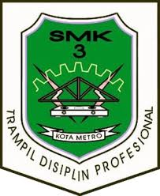

SMK NEGERI 3 METRO



JUJUR • UNGGUL • AKTIF • RELIGIUS • ANDAL

Pelaporan pelanggaran (Whistle Blowing System) adalah pengungkapan tindakan pelanggaran atau pengungkapan perbuatan yang melawan hukum, perbuatan tidak etis/tidak bermoral atau perbuatan lain yang dapat merugikan organisasi maupun pemangku kepentingan yang dilakukan oleh pejabat/pegawai kepada pimpinan atau lembaga lain yang dapat mengambil tindakan atas pelanggaran tersebut.
Selengkapnya
Dalam rangka mempersiapkan pelaksanaan lomba pada kegiatan KNTHREE FEST 2026 yang diselenggarakan oleh SMK Negeri 3 Metro, panitia akan mengadakan Technical Meeting untuk cabang lomba LPBB (Lomba Peraturan Baris-Berbaris) dan Senam Pramuka.
SelengkapnyaDalam rangka memperingati Hari Guru Nasional yang ke-79, sebuah webinar istimewa diselenggarakan untuk memberikan inspirasi dan pembelajaran kepada para guru serta masyarakat luas. Tema dari webinar kali ini adalah "Meningkatkan Kualitas Pendidikan Melalui Inovasi dan Dedikasi Guru", dengan menghadirkan dua narasumber yang luar biasa
SelengkapnyaSMKN 3 Metro mengawali tahun 2025 dengan menggelar Rapat Dinas Awal Semester pada Kamis 2 Januari 2025, bertempat di aula sekolah. Rapat ini dipimpin langsung oleh Ibu Erlian, Kepala SMKN 3 Metro, yang menyampaikan evaluasi berbagai program sekolah selama tahun 2024 serta memberikan orientasi strategis untuk tahun 2025.
Selengkapnya